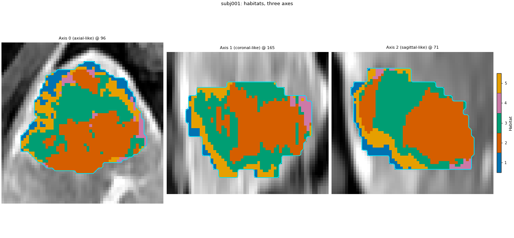
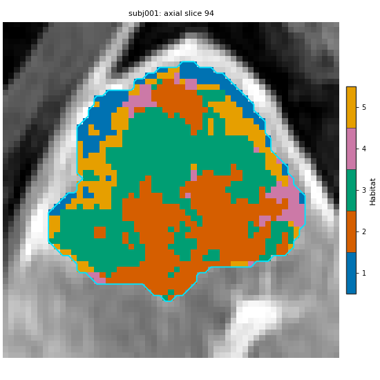
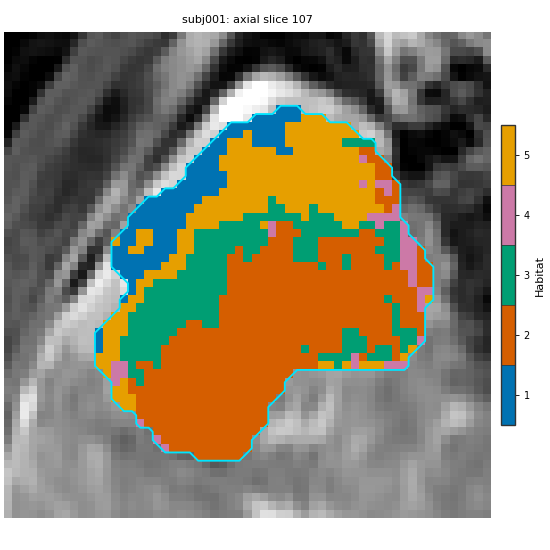
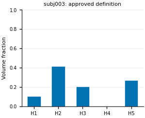
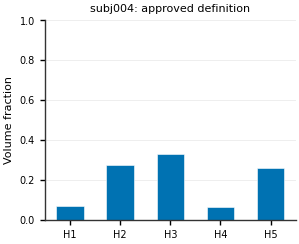
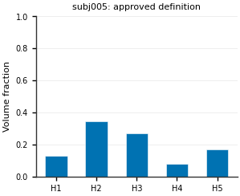
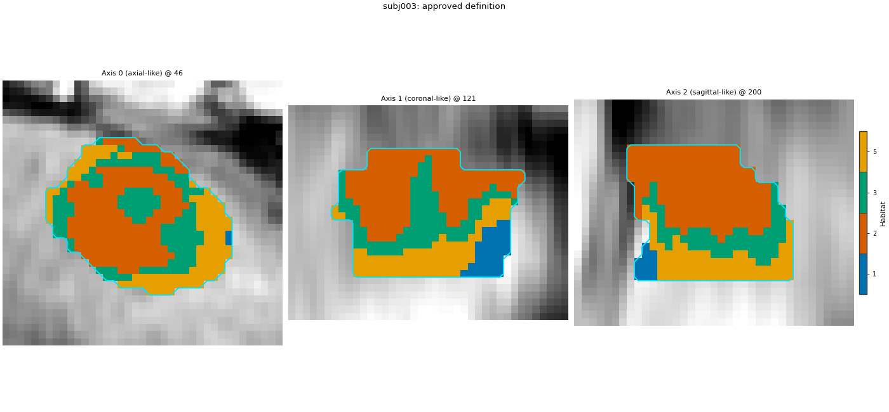
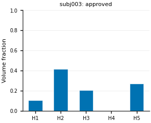
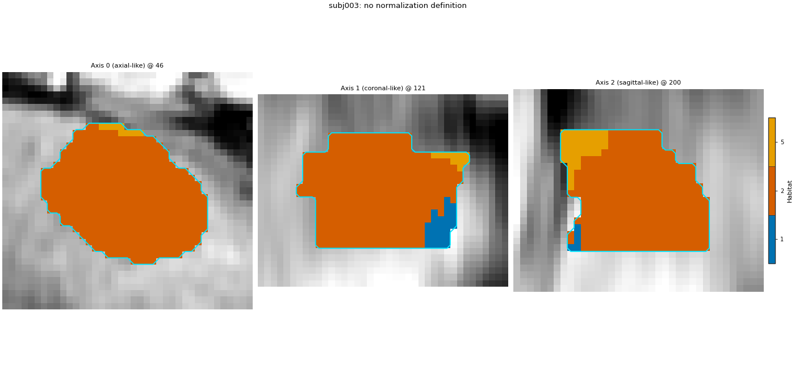
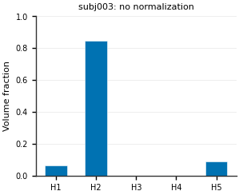

Note
Go to the end to download the full example code.
Quality control of habitat maps
Background. A habitat model always returns a map, even when the definition behind it is poor. Two failure patterns are common and easy to miss if you only read the feature table: a one-block map, where most of a tumour falls into a single habitat (often because the scan is globally brighter or darker than the training scans), and a fragmented map, where habitats break into many tiny specks that no reader would call a region. Both still produce volume fractions, MSI and ITH numbers, so they must be caught by looking and by simple checks.
Purpose. You will run a short QC checklist on the approved analysis definition: overlays on several slices and all three axes, the supervoxel / habitat triptych, the elbow curve that chose the number of habitats, per-habitat volume fractions per subject, and three numeric flags per map (one-block, missing habitat, fragmented). Then you will run a deliberately poor definition next to it and print the same flags for both.
When to use. After every fit and every prediction on new patients, before the feature table goes into statistics. The flags are cheap; the figures are for the maps the flags point at.
Key terms. Full definitions are on Concepts.
analysis definition – the approved two-step stage list of Two-step habitats with a Spec, fitted on subj001 + subj002; subj003..subj005 are labelled with the saved model.
one-block flag – the largest habitat covers more than 60 % of the ROI. The 60 % is a threshold chosen for this page, not a published cut-off; set your own from your cohort.
missing-habitat flag – fewer habitats are present in the map than the model has.
fragmented flag – more than 5 % of ROI voxels sit in connected pieces smaller than 10 voxels (face connectivity, the same connectivity the ITH score uses). Both numbers are page choices.
ITH score – 0 when every habitat is one blob, close to 1 when habitats split into many pieces; printed next to the flags.
What varies. Only subject-level normalization. The “poor” definition is the approved stage list with the two subject-level stages (winsorize, min-max) removed; every other stage, parameter and seed is the same. Because the elbow rule then runs on different features, it may keep a different number of habitats; that is part of the result.
Note
The demo has five patients: two train the model here and three are new. These are demo checks of mechanics, not a validated QC protocol.
Change DATA / MODALITIES / ROI to your preprocessed tree.
Load the cohort and split it
subj001 and subj002 define the habitats; subj003..subj005 are new patients labelled with the saved model. This is the 5-subject demo cohort split in two. sphinx_gallery_thumbnail_number = 4
from pathlib import Path
from typing import Dict, List, Tuple
import matplotlib.pyplot as plt
import numpy as np
import pandas as pd
from scipy import ndimage
from habit.contracts import HabitatMap, cohort_from_directory
from habit.datasets import fetch_demo
from habit.kernels import habitat_region_stats, ith_score
from habit.execution import backend_from_policy
from habit.recipes import Study
from habit.spec import HabitatSpec, Spec, Stage
from habit.spec.policy import RunPolicy
from habit.viz import (
plot_cluster_validation_from_report,
plot_habitat_overlay,
plot_habitat_volume_fractions,
plot_partition_triptych,
)
# Change DATA / MODALITIES / ROI to your preprocessed layout.
DATA = fetch_demo()
MODALITIES = ("pre_contrast", "LAP", "PVP", "delay_3min")
ROI = "LAP"
cohort = cohort_from_directory(DATA, modalities=MODALITIES, roi=ROI)
train, new_patients = cohort[:2], cohort[2:5]
print("train:", list(train.subject_ids), " new:", list(new_patients.subject_ids))
Path("out").mkdir(exist_ok=True)
HABIT demo data (cached)
DATA (preprocessed root): C:\Users\dongm\.habit_data\demo-data-v1\preprocessed
On-disk inventory of this folder:
subjects (5): subj001, subj002, subj003, subj004, subj005
image series: LAP, PVP, delay_3min, pre_contrast
mask keys: LAP, PVP, delay_3min, pre_contrast
example image: images/subj001/delay_3min/WATER__BH_Ax_LAVA_Flex_3min_Series0012.nrrd
example mask: masks/subj001/delay_3min/WATER__BH_Ax_LAVA_Flex_10min_Series0017_mask.nrrd
Your own data must use the same folder tree (change IDs / series names):
DATA/
images/<subject_id>/<modality>/<one image file>
masks/<subject_id>/<roi>/<one mask file>
Then load it with the same call the demos use:
cohort = cohort_from_directory(DATA, modalities=("LAP",), roi="LAP")
Swap DATA / modalities / roi to match your tree. Mask key is often the
same as one image series (here LAP).
train: ['subj001', 'subj002'] new: ['subj003', 'subj004', 'subj005']
Two definitions that differ in one factor
build_spec returns the approved stage list. With
normalize=False it drops the two subject-level stages and changes
nothing else, so any difference between the two runs comes from
per-patient normalization alone.
def build_spec(name: str, normalize: bool) -> HabitatSpec:
"""Return the approved two-step spec, optionally without normalization.
Args:
name: Name stored in the spec and in the run manifest.
normalize: Keep the subject-level winsorize + z-score stages.
Returns:
A :class:`~habit.spec.HabitatSpec` ready for ``Study``.
"""
stages: List[Stage] = [
# extract: one intensity column per DCE phase, voxels inside the ROI.
Stage("extract", Spec("raw", {"modalities": list(MODALITIES), "roi": ROI})),
]
if normalize:
stages += [
# subject-level: clip to this patient's own 1st..99th percentile.
Stage("preprocess", Spec("winsorize", {"winsor_limits": [0.01, 0.01]})),
# subject-level: rescale to 0..1 with this patient's own min / max,
# so a globally darker scan uses the same range as a brighter one.
Stage("preprocess2", Spec("zscore")),
]
stages += [
# partition: 30 supervoxels per tumour.
Stage("partition", Spec("kmeans", {"n_supervoxels": 30})),
# pool: stack the training supervoxels into one matrix.
Stage("pool", Spec("pool")),
# cohort-level: 10 equal-width bins, edges learned on the pooled
# training supervoxels and stored in the model.
# fit: k-means for the cohort, 2..10 habitats, elbow rule.
Stage(
"fit",
Spec(
"kmeans",
{"min_habitats": 2, "max_habitats": 10, "validation": "elbow", "n_init": 10},
),
),
Stage("assign", Spec("nearest_centroid")),
# quantify: the volume table is used below for a cross-check.
Stage("volume", Spec("volume")),
Stage("ith", Spec("ith_score")),
]
return HabitatSpec(name=name, stages=tuple(stages), random_seed=0)
Fit the approved definition and label the new patients
fit_predict learns the habitats on the two training patients.
Study.from_model(...).predict labels the new patients with those
centroids and the stored bin edges, without refitting.
spec = build_spec("qc_approved", normalize=True)
result = Study(spec).fit_predict(
train,
backend=backend_from_policy(
RunPolicy(backend="serial", on_subject_failure="continue")
),
)
model = result.habitat_model
prediction = Study.from_model(model, spec=spec).predict(new_patients)
print(model.summary())
Cohort.map[_ComputeUnits]: 0%| | 0/2 [00:00<?, ?it/s]
Cohort.map[_ComputeUnits]: 50%|█████ | 1/2 [00:04<00:04, 4.39s/it]
Cohort.map[_ComputeUnits]: 100%|██████████| 2/2 [00:06<00:00, 3.09s/it]
Cohort.map[_ComputeUnits]: 100%|██████████| 2/2 [00:06<00:00, 3.09s/it]
Cohort.map[_AssignPrecomputedUnits]: 0%| | 0/2 [00:00<?, ?it/s]
Cohort.map[_AssignPrecomputedUnits]: 50%|█████ | 1/2 [00:00<00:00, 1.79it/s]
Cohort.map[_AssignPrecomputedUnits]: 100%|██████████| 2/2 [00:01<00:00, 1.84it/s]
Cohort.map[_AssignPrecomputedUnits]: 100%|██████████| 2/2 [00:01<00:00, 1.84it/s]
Cohort.map[_LabelAndDescribe]: 0%| | 0/3 [00:00<?, ?it/s]
Cohort.map[_LabelAndDescribe]: 33%|███▎ | 1/3 [00:02<00:04, 2.07s/it]
Cohort.map[_LabelAndDescribe]: 67%|██████▋ | 2/3 [00:04<00:02, 2.13s/it]
Cohort.map[_LabelAndDescribe]: 100%|██████████| 3/3 [00:12<00:00, 4.13s/it]
Cohort.map[_LabelAndDescribe]: 100%|██████████| 3/3 [00:12<00:00, 4.13s/it]
HabitatModel kmeans-3432f3b65bfec11a
habitats : 5
features (4) : pre_contrast, LAP, PVP, delay_3min
defining cohort : n=2
modalities : pre_contrast, LAP, PVP, delay_3min
cohort digest : cc1b16a34cc7478d...
produced by : habitat_model_fitter.kmeans
habit version : 3.0.0
random seed : 0
preprocessing state: inertia, selection_report, validation
Check 1: the number of habitats
The elbow curve should have a visible bend at the kept count. A curve with no bend means the count is a guess; look at neighbouring counts before trusting the maps.
report = model.preprocessing_state["selection_report"]
fig = plot_cluster_validation_from_report(report, title="Approved definition: elbow curve")
fig.savefig("out/quality_control_elbow.png", dpi=150, bbox_inches="tight")
plt.show()

Check 2: supervoxels and habitats on one slice
The triptych shows whether habitats follow the supervoxel patches and the anatomy. Habitats that cut straight through uniform tissue, or supervoxels that ignore visible edges, are worth a second look.
subject = train[0]
habitat_map = result.habitat_maps[0]
fig = plot_partition_triptych(subject.image("LAP"), result.units[0], habitat_map, axis=0)
fig.savefig("out/quality_control_triptych.png", dpi=150, bbox_inches="tight")
plt.show()

F:\work\habit_project\habit\viz\habitat_core.py:1110: UserWarning: Display geometry conflict: image/anatomy direction does not match mask/label direction. Using the mask/label direction so coronal/sagittal superior-up follows the labelled anatomy. Pass direction= to override.
resolved_direction, resolved_spacing = resolve_display_geometry(
Check 3: overlays on all three axes and several slices
The default overlay draws the three orthogonal planes (each at its densest habitat slice). One slice can hide a one-block or speckled region, so two more axial slices are drawn near the top and bottom quarter of the tumour.
fig = plot_habitat_overlay(
subject.image("LAP"),
habitat_map,
title=f"{subject.subject_id}: habitats, three axes",
crop_to="labels",
)
fig.savefig("out/quality_control_axes.png", dpi=150, bbox_inches="tight")
plt.show()
# Axial (axis 0) indices at the 25th and 75th percentile of the slices
# that contain habitat voxels. Plain numpy on the label array.
z_with_labels = np.nonzero(np.asarray(habitat_map.label_array) > 0)[0]
for quantile in (25, 75):
z_index = int(np.percentile(z_with_labels, quantile))
fig = plot_habitat_overlay(
subject.image("LAP"),
habitat_map,
title=f"{subject.subject_id}: axial slice {z_index}",
axis=0,
index=z_index,
crop_to="labels",
)
fig.savefig(f"out/quality_control_axial_{quantile}.png", dpi=150, bbox_inches="tight")
plt.show()



F:\work\habit_project\habit\viz\habitat_overlay.py:806: UserWarning: Display geometry conflict: image/anatomy direction does not match mask/label direction. Using the mask/label direction so coronal/sagittal superior-up follows the labelled anatomy. Pass direction= to override.
resolved_direction, resolved_spacing = resolve_display_geometry(
F:\work\habit_project\habit\viz\habitat_overlay.py:806: UserWarning: Display geometry conflict: image/anatomy direction does not match mask/label direction. Using the mask/label direction so coronal/sagittal superior-up follows the labelled anatomy. Pass direction= to override.
resolved_direction, resolved_spacing = resolve_display_geometry(
F:\work\habit_project\habit\viz\habitat_overlay.py:806: UserWarning: Display geometry conflict: image/anatomy direction does not match mask/label direction. Using the mask/label direction so coronal/sagittal superior-up follows the labelled anatomy. Pass direction= to override.
resolved_direction, resolved_spacing = resolve_display_geometry(
Check 4: numeric flags for every map
qc_flags reads only the label array. It reports the fraction of
each habitat, how many of the model’s habitats are present, how many
connected pieces there are, the share of voxels in tiny pieces and the
ITH score, and turns three of them into True / False flags.
ONE_BLOCK_MAX = 0.60 # page choice: largest habitat above 60 % of the ROI
TINY_PIECE_VOXELS = 10 # page choice: a "tiny" connected piece
TINY_SHARE_MAX = 0.05 # page choice: more than 5 % of voxels in tiny pieces
def qc_flags(habitat_map: HabitatMap, n_habitats: int) -> Dict[str, object]:
"""Compute simple QC numbers and flags for one habitat map.
Args:
habitat_map: Label map to check (``0`` is background).
n_habitats: Number of habitats in the model that painted the map.
Returns:
A flat dict: per-habitat fractions, present count, component
count, tiny-piece share, ITH score and the three boolean flags.
"""
labels = np.asarray(habitat_map.label_array)
inside = labels[labels > 0]
row: Dict[str, object] = {"subject": habitat_map.subject_id}
# Fraction of ROI voxels per habitat id; absent habitats report 0.
fractions = {hid: float(np.mean(inside == hid)) for hid in range(1, n_habitats + 1)}
for hid, value in fractions.items():
row[f"h{hid}"] = round(value, 3)
# Connected pieces per habitat (face connectivity, as the ITH score).
region_stats = habitat_region_stats(labels)
tiny_voxels = 0
for hid in region_stats:
pieces, _ = ndimage.label(labels == hid)
sizes = np.bincount(pieces.ravel())[1:]
tiny_voxels += int(sizes[sizes < TINY_PIECE_VOXELS].sum())
tiny_share = tiny_voxels / inside.size
largest = max(fractions.values())
present = sum(1 for value in fractions.values() if value > 0)
row.update(
{
"largest": round(largest, 3),
"present": f"{present}/{n_habitats}",
"pieces": int(sum(n for n, _ in region_stats.values())),
"tiny_share": round(tiny_share, 3),
"ith": round(float(ith_score(labels)), 3),
"one_block": largest > ONE_BLOCK_MAX,
"missing_habitat": present < n_habitats,
"fragmented": tiny_share > TINY_SHARE_MAX,
}
)
return row
def volume_cross_check(maps: Tuple[HabitatMap, ...], frame: pd.DataFrame, n_habitats: int) -> bool:
"""True when label-array fractions equal the ``volume`` stage columns.
Args:
maps: Habitat maps produced by one run.
frame: That run's ``features.frame`` (column ``subject``).
n_habitats: Number of habitats in the model.
Returns:
Whether every subject's fractions agree to 1e-6.
"""
table = frame.set_index("subject")
for one_map in maps:
labels = np.asarray(one_map.label_array)
inside = labels[labels > 0]
for hid in range(1, n_habitats + 1):
column = f"habitat_{hid}_volume_fraction"
stored = float(table.loc[one_map.subject_id, column]) if column in table else 0.0
if abs(stored - float(np.mean(inside == hid))) > 1e-6:
return False
return True
approved_maps = tuple(result.habitat_maps) + tuple(prediction.habitat_maps)
approved_qc = pd.DataFrame([qc_flags(m, model.n_habitats) for m in approved_maps])
print(f"Approved definition (K = {model.n_habitats}):")
print(approved_qc.to_string(index=False))
print(
"cross-check, fractions == volume stage columns:",
volume_cross_check(tuple(result.habitat_maps), result.features.frame, model.n_habitats)
and volume_cross_check(tuple(prediction.habitat_maps), prediction.features.frame, model.n_habitats),
)
Approved definition (K = 5):
subject h1 h2 h3 h4 h5 largest present pieces tiny_share ith one_block missing_habitat fragmented
subj001 0.096 0.336 0.312 0.044 0.212 0.336 5/5 201 0.012 0.965 False False False
subj002 0.081 0.107 0.440 0.213 0.159 0.440 5/5 57 0.009 0.907 False False False
subj003 0.105 0.415 0.208 0.000 0.272 0.415 4/5 41 0.011 0.504 False True False
subj004 0.069 0.274 0.333 0.063 0.260 0.333 5/5 57 0.016 0.844 False False False
subj005 0.132 0.348 0.270 0.081 0.169 0.348 5/5 423 0.009 0.984 False False False
cross-check, fractions == volume stage columns: True
Check 5: volume fractions per subject
One bar chart per new patient. A healthy map spreads its voxels over several habitats; one tall bar is the one-block pattern.
for one_map in prediction.habitat_maps:
labels = np.asarray(one_map.label_array)
inside = labels[labels > 0]
fractions = {hid: float(np.mean(inside == hid)) for hid in range(1, model.n_habitats + 1)}
fig = plot_habitat_volume_fractions(fractions, title=f"{one_map.subject_id}: approved definition")
fig.savefig(f"out/quality_control_fractions_{one_map.subject_id}.png", dpi=150, bbox_inches="tight")
plt.show()



A deliberately poor definition
Same stages without the subject-level normalization. MR intensities are in arbitrary units, so a new patient whose scan is globally darker or brighter than the training scans is pushed towards the centroids nearest its overall intensity level.
poor_spec = build_spec("qc_no_subject_normalization", normalize=False)
poor_result = Study(poor_spec).fit_predict(
train,
backend=backend_from_policy(
RunPolicy(backend="serial", on_subject_failure="continue")
),
)
poor_model = poor_result.habitat_model
poor_prediction = Study.from_model(poor_model, spec=poor_spec).predict(new_patients)
poor_maps = tuple(poor_result.habitat_maps) + tuple(poor_prediction.habitat_maps)
poor_qc = pd.DataFrame([qc_flags(m, poor_model.n_habitats) for m in poor_maps])
print(f"Poor definition, no subject-level normalization (K = {poor_model.n_habitats}):")
print(poor_qc.to_string(index=False))
print(
"cross-check, fractions == volume stage columns:",
volume_cross_check(tuple(poor_result.habitat_maps), poor_result.features.frame, poor_model.n_habitats)
and volume_cross_check(
tuple(poor_prediction.habitat_maps), poor_prediction.features.frame, poor_model.n_habitats
),
)
Cohort.map[_ComputeUnits]: 0%| | 0/2 [00:00<?, ?it/s]
Cohort.map[_ComputeUnits]: 50%|█████ | 1/2 [00:03<00:03, 3.38s/it]
Cohort.map[_ComputeUnits]: 100%|██████████| 2/2 [00:05<00:00, 2.55s/it]
Cohort.map[_ComputeUnits]: 100%|██████████| 2/2 [00:05<00:00, 2.55s/it]
Cohort.map[_AssignPrecomputedUnits]: 0%| | 0/2 [00:00<?, ?it/s]
Cohort.map[_AssignPrecomputedUnits]: 50%|█████ | 1/2 [00:00<00:00, 1.88it/s]
Cohort.map[_AssignPrecomputedUnits]: 100%|██████████| 2/2 [00:01<00:00, 1.83it/s]
Cohort.map[_AssignPrecomputedUnits]: 100%|██████████| 2/2 [00:01<00:00, 1.83it/s]
Cohort.map[_LabelAndDescribe]: 0%| | 0/3 [00:00<?, ?it/s]
Cohort.map[_LabelAndDescribe]: 33%|███▎ | 1/3 [00:01<00:03, 1.97s/it]
Cohort.map[_LabelAndDescribe]: 67%|██████▋ | 2/3 [00:03<00:01, 1.96s/it]
Cohort.map[_LabelAndDescribe]: 100%|██████████| 3/3 [00:11<00:00, 3.73s/it]
Cohort.map[_LabelAndDescribe]: 100%|██████████| 3/3 [00:11<00:00, 3.73s/it]
Poor definition, no subject-level normalization (K = 5):
subject h1 h2 h3 h4 h5 largest present pieces tiny_share ith one_block missing_habitat fragmented
subj001 0.221 0.116 0.252 0.047 0.364 0.364 5/5 194 0.012 0.961 False False False
subj002 0.181 0.242 0.478 0.000 0.099 0.478 4/5 36 0.008 0.842 False True False
subj003 0.065 0.845 0.000 0.000 0.090 0.845 3/5 9 0.001 0.720 True True False
subj004 0.668 0.125 0.159 0.048 0.000 0.668 4/5 45 0.018 0.900 True True False
subj005 0.266 0.000 0.000 0.734 0.000 0.734 2/5 68 0.001 0.949 True True False
cross-check, fractions == volume stage columns: True
The flags side by side
One row per subject and definition; only the flag columns and the numbers they are based on.
columns = ["subject", "largest", "present", "tiny_share", "ith", "one_block", "missing_habitat", "fragmented"]
side_by_side = pd.concat(
[approved_qc[columns].assign(definition="approved"), poor_qc[columns].assign(definition="no normalization")]
)
print(side_by_side.set_index(["definition", "subject"]).to_string())
largest present tiny_share ith one_block missing_habitat fragmented
definition subject
approved subj001 0.336 5/5 0.012 0.965 False False False
subj002 0.440 5/5 0.009 0.907 False False False
subj003 0.415 4/5 0.011 0.504 False True False
subj004 0.333 5/5 0.016 0.844 False False False
subj005 0.348 5/5 0.009 0.984 False False False
no normalization subj001 0.364 5/5 0.012 0.961 False False False
subj002 0.478 4/5 0.008 0.842 False True False
subj003 0.845 3/5 0.001 0.720 True True False
subj004 0.668 4/5 0.018 0.900 True True False
subj005 0.734 2/5 0.001 0.949 True True False
Look at the worst map under both definitions
The new patient with the largest single-habitat fraction under the poor definition, drawn under both definitions with the same crop window so the two figures show the same anatomy.
poor_new = poor_qc.iloc[len(train):]
worst_id = str(poor_new.loc[poor_new["largest"].idxmax(), "subject"])
worst_subject = next(s for s in new_patients if s.subject_id == worst_id)
approved_worst = next(m for m in prediction.habitat_maps if m.subject_id == worst_id)
poor_worst = next(m for m in poor_prediction.habitat_maps if m.subject_id == worst_id)
# Union of both label maps places one shared crop window.
crop_window = (np.asarray(approved_worst.label_array) > 0) | (np.asarray(poor_worst.label_array) > 0)
for name, one_map, n_habitats in (
("approved", approved_worst, model.n_habitats),
("no_normalization", poor_worst, poor_model.n_habitats),
):
fig = plot_habitat_overlay(
worst_subject.image("LAP"),
one_map,
title=f"{worst_id}: {name.replace('_', ' ')} definition",
crop_to="labels",
crop_labels=crop_window.astype(np.uint8),
)
fig.savefig(f"out/quality_control_worst_{name}.png", dpi=150, bbox_inches="tight")
plt.show()
labels = np.asarray(one_map.label_array)
inside = labels[labels > 0]
fractions = {hid: float(np.mean(inside == hid)) for hid in range(1, n_habitats + 1)}
fig = plot_habitat_volume_fractions(fractions, title=f"{worst_id}: {name.replace('_', ' ')}")
fig.savefig(f"out/quality_control_worst_{name}_fractions.png", dpi=150, bbox_inches="tight")
plt.show()




F:\work\habit_project\habit\viz\habitat_overlay.py:806: UserWarning: Display geometry conflict: image/anatomy direction does not match mask/label direction. Using the mask/label direction so coronal/sagittal superior-up follows the labelled anatomy. Pass direction= to override.
resolved_direction, resolved_spacing = resolve_display_geometry(
F:\work\habit_project\habit\viz\habitat_overlay.py:806: UserWarning: Display geometry conflict: image/anatomy direction does not match mask/label direction. Using the mask/label direction so coronal/sagittal superior-up follows the labelled anatomy. Pass direction= to override.
resolved_direction, resolved_spacing = resolve_display_geometry(
How to read the result
Measured on this run (approved definition: K = 4 on subj001 + subj002; poor definition without subject-level winsorize / z-score: K = 5):
Approved maps for all five patients: no one-block, no missing habitat, no fragmented flag. Largest habitat 33–48 % of the ROI; tiny-piece share 0.5–1.4 %; ITH 0.84–0.98.
Without subject-level normalization, held-out subj004 and subj005 raised the one-block flag (largest habitat 61 % and 67 %) and both missed two of the five habitats. Training patients stayed clear of those flags but the elbow kept a different K.
Volume-stage fractions matched the label-array fractions in both runs (cross-check True).
The 60 % / 5 % / 10-voxel thresholds are page choices. Set your own from your cohort before treating a flag as a reject rule.
Where to go next
The approved analysis these checks run on: Two-step habitats with a Spec.
Remove tiny pieces from a map that the fragmented flag points at: Cleaning habitat maps (connected components).
How the maps react to a slightly larger or smaller ROI: Precise features and habitat stability.
Choosing the number of habitats with other criteria: Clustering algorithm and number of habitats.
The volume fraction and ITH definitions: Volume and fractions and Intratumoral heterogeneity (ITH).
Total running time of the script: (0 minutes 58.749 seconds)